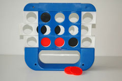

|

|
History
Shift Tac Toe was first released in 1988 by Pressman games.
Game Play
The Pieces:
Black and red circles.
Rules:
To move: The player either selects an open slot or shifts the game board.
To win: To be the first player to get three in a row either horizontally, vertically or diagonally.
Shift Tac Toe is very similar to Tic Tac Toe, with the extra option to “shift” on of the rows on your turn. The players take turns, and on each turn a player gets to choose either to drop a piece into the board or shift on of the rows. The game ends when one of the players gets three-in-a-row.
Variants:
Misere: To force your opponent in getting three in a row either horizontally, vertically or diagonally.
|
|
|

|
 |

|
External Links:
Official Shift Tac Toe Site